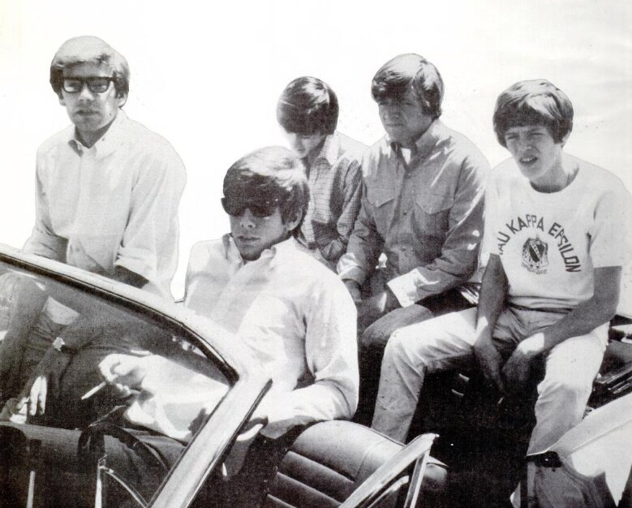

Herman's Hermits built a career on singalong choruses, a music-hall wink, and the boyish charm of teenage frontman Peter Noone.
For one stretch of 1965 the Manchester band sold more singles in America than any other act, the Beatles included.

Table of Contents
- From a Manchester Dance Hall to Mickie Most
- Conquering America in 1965
- The Other Hits, the Films, and the Session Players
- Why Peter Noone Left and What Came After
- FAQ
From a Manchester Dance Hall to Mickie Most
The group came together in Manchester in 1964 out of two local beat outfits.
Peter Noone sang lead, Keith Hopwood played rhythm guitar, and Karl Green played bass.
Derek Leckenby handled lead guitar and Barry Whitwam sat behind the drums.
Noone was still a teenager and had already acted as a child on the soap opera Coronation Street.
The name came from a Manchester publican.
He said Noone looked like Sherman from the Rocky and Bullwinkle cartoons.
Noone misheard it as Herman, and the band became Herman and the Hermits before trimming the name down.
The Mickie Most Formula
Producer Mickie Most signed the group to EMI Columbia and built the records around Noone's voice.
He thought the singer looked like a young JFK.
For the American market Most leaned into old British music-hall material.
That choice set the band apart from the blues-driven British Invasion acts.
The debut single, "I'm Into Something Good," was written by Gerry Goffin and Carole King.
It reached number one in Britain in 1964 and number 13 in the United States.
How Herman's Hermits Conquered America in 1965
The turning point was "Mrs. Brown, You've Got a Lovely Daughter."
It topped the American chart for three weeks in the spring of 1965.
Noone sang it in a broad, exaggerated Manchester accent that American listeners loved.
The song was never even issued as a single in Britain.
The follow-up, "I'm Henry the VIII, I Am," also went to number one in the United States.
That track was built on a British music-hall number from 1910.
At the time it was reported as the fastest-selling single in history.
Bigger Than the Beatles, Briefly
Billboard named the band America's top singles act of 1965.
The Beatles finished second that year.
Between March and August 1965 the group spent 24 straight weeks in the American Top Ten.
Noone appeared on the cover of Time magazine in May 1965.
The band played more than 300 shows that year.
"Can't You Hear My Heartbeat" had already reached number two in the States that January.
The Other Hits, the Films, and the Session Players
The group kept scoring on both sides of the Atlantic through 1967.
"There's a Kind of Hush" climbed to number four in the US in 1967.
"No Milk Today," written by Graham Gouldman, reached number seven in Britain.
The band also had a US Top Five hit with "Dandy," a Ray Davies song first cut by the Kinks.
| Single | Year | UK | US (Billboard) |
|---|---|---|---|
| I'm Into Something Good | 1964 | 1 | 13 |
| Can't You Hear My Heartbeat | 1965 | Not a UK single | 2 |
| Silhouettes | 1965 | 3 | 5 |
| Wonderful World | 1965 | 7 | 4 |
| Mrs. Brown, You've Got a Lovely Daughter | 1965 | Not a UK single | 1 |
| I'm Henry the VIII, I Am | 1965 | Not a UK single | 1 |
| A Must to Avoid | 1965 | 6 | 8 |
| Listen People | 1966 | Not a UK single | 3 |
| No Milk Today | 1966 | 7 | 35 |
| There's a Kind of Hush | 1967 | 7 | 4 |
Who Actually Played on the Records
Mickie Most sometimes hired session musicians, a common practice at the time.
Future Led Zeppelin bassist John Paul Jones arranged many of the sessions.
He played double bass and piano on "There's a Kind of Hush."
The guitar riff on "Silhouettes" is often credited to Jimmy Page.
Derek Leckenby said he played it himself.
The members of Herman's Hermits did play on all of their British and American number ones.
The Band on Screen
The group also turned up in cinemas during the boom years.
- "When the Boys Meet the Girls" (1965), an MGM musical with a guest slot for the band
- "Hold On!" (1966), their first starring vehicle
- "Mrs. Brown, You've Got a Lovely Daughter" (1968), with Noone in the lead role
Why Peter Noone Left and What Came After
Peter Noone left the group in 1971, around the time of his 24th birthday.
He had already gone into business with Graham Gouldman, later of 10cc, running a boutique in New York.
After Noone the band carried on as the Hermits with drummer Barry Whitwam.
The hits, though, had stopped.
Derek Leckenby died of non-Hodgkin lymphoma in 1994.
Two Bands, One Name
Today two touring groups use the name.
Noone leads Herman's Hermits Starring Peter Noone across North America.
Barry Whitwam runs a separate lineup in Britain.
A 2003 trademark settlement forced the "Starring Peter Noone" billing in the States.
Estimates of the group's worldwide record sales range from 40 million to 60 million.
FAQ
How did Herman's Hermits get their name?
A Manchester publican told Peter Noone he looked like Sherman from the Rocky and Bullwinkle cartoons.
Noone misheard the name as Herman.
The group briefly called itself Herman and the Hermits, then shortened it.
Did Herman's Hermits really outsell the Beatles?
For one year, yes.
Billboard ranked them America's top singles act of 1965, with the Beatles in second place.
The group also spent 24 consecutive weeks in the US Top Ten that year.
Why did Peter Noone leave Herman's Hermits?
Noone left in 1971, around his 24th birthday, to pursue acting and solo work.
He later starred on Broadway in The Pirates of Penzance.
The band kept touring without him under a shortened name.
Are the band still performing today?
Yes.
Peter Noone still fronts one touring version in North America.
Barry Whitwam, the original drummer, leads a separate lineup based in Britain.
Did the band play on their own records?
On the biggest hits, yes.
The band played on all of its British and American number ones.
Producer Mickie Most did bring in session players for some other tracks, including John Paul Jones.
The band's mix of charm and old-fashioned tunes made it one of the defining pop acts of the British Invasion.
Its clean-cut image ran parallel to fellow chart rivals like the Dave Clark Five.
Few groups packed as many singalong hits into a five-year run as Herman's Hermits.
Back to the 1960smusic.net homepage to explore every genre of the decade.